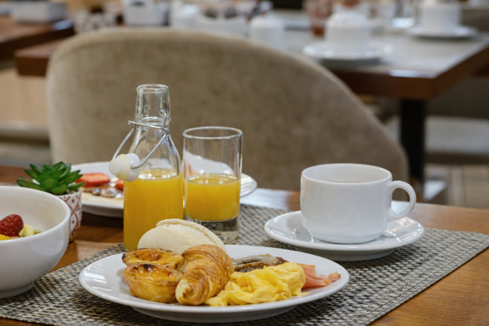

餐飲服務
雲旅小棧以效率與品質並重，提供適合商務旅客與都會旅人的用餐選擇。 從晨間活力早餐到晚間精緻套餐，讓你在緊湊行程中也能吃得剛剛好、舒服又有儀式感。
晨光活力早餐
以「快速取餐、均衡營養」為設計方向，提供中西式選擇、現煮熱飲與季節水果； 讓你出門前補足能量，也不耽誤會議與移動時間。
- 商務旅客快速取餐動線
- 均衡搭配：主食／蛋白質／蔬果
- 外帶咖啡杯與簡易打包服務（依現場提供）
午間商務輕食
以簡潔不失質感的輕食與套餐為主，適合商務洽談、短暫休息或行程銜接。 你也可以依需求選擇「快速上桌」的用餐節奏。
- 輕食／沙拉／湯品與商務套餐
- 可加購甜點與飲品（依現場供應）
- 提供安靜座位區，方便洽談與筆電使用
晚間精緻套餐
以精緻套餐形式呈現，適合在一天行程結束後慢下來。 無論是自我犒賞或小型聚餐，都能在沉穩空間裡享受舒服的用餐節奏。
- 精緻套餐／主廚每日推薦（依現場供應）
- 可提供無酒精飲品搭配
- 如需團體訂位，建議提前預約
貼心提醒
- 餐點內容依季節與供應狀況調整，實際以現場公告為主。
- 如有過敏或飲食禁忌（素食、無麩質等），可於訂房備註或提前告知。
- 需要協助或特殊安排，歡迎前往 交通與聯絡 與我們聯繫。